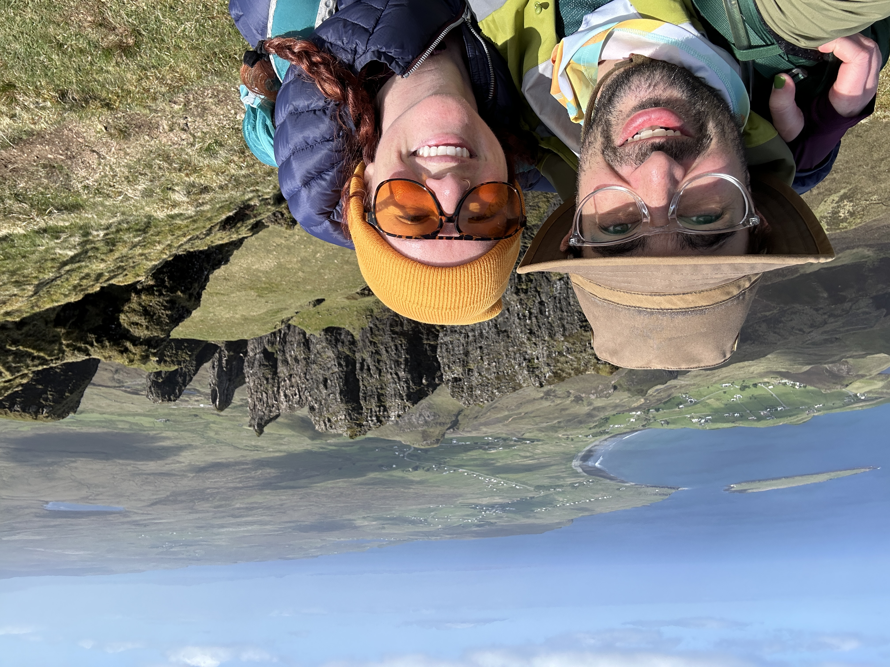

About Me
- Award-winning Master Brewer
- Graduate of Arkansas Coding Academy
- Designed and coded a full-stack Web Application
- Excited to learn more about the world of Computer Science
- I lived in Munich, Germany for 5 Months
- I once owned a van and toured the Midwest with a band
- I have over 2 Million photo views on my Google Maps contributions
- I own 9 Bicycles
- I own at least 9 Synthesizers



Experience
Yellow Rocket Concepts Restaurant Group
2011-2023
Brewmaster Lost 40 Brewing
Jan 2020 - April 2023
- Oversaw all aspects of production from grain to glass on
every beverage.
- Managed operations with a staff of 20 people.
- Directly reported to Ownership Group.
- Acheived Operating Partner status.
Production Manager Lost 40 Brewing
Sept 2015 - Jan 2020
- Managed scheduling and execution of brewing production.
- Oversaw staff training and development.
- Managed inventory and recipe creation.
Assistant Brewer Lost 40 Brewing
Sept 2014 - Sept 2015
- Worked side-by-side with Brewmaster in every capacity for hands-on training.
- Worked within every aspect of beverage production from
grain to glass.
Restaurant Manager YRC
May 2011 - Sept 2014
- Contributed to the establishment and growth of the
restaurant group's beverage program.
- Organized staff training and scheduling, menu development, and bartending.
- Took part in restaurant opening and operating
Skills
| Skill | Level | Years of Experience |
|---|---|---|
| Brewing | Intermediate | 8 Years |
| Personnel Management | Intermediate | 11 Years |
| Java | Beginner | 6 Months |
| HTML | Beginner | 6 Months |
| Bootstrap/CSS | Beginner | 6 Months |
| Apache Tomcat | Beginner | 3 Months |
| MySQL | Beginner | 6 Months |
| AngularJs | Beginner | 3 Months |
| RESTful APIs | Beginner | 3 Months |